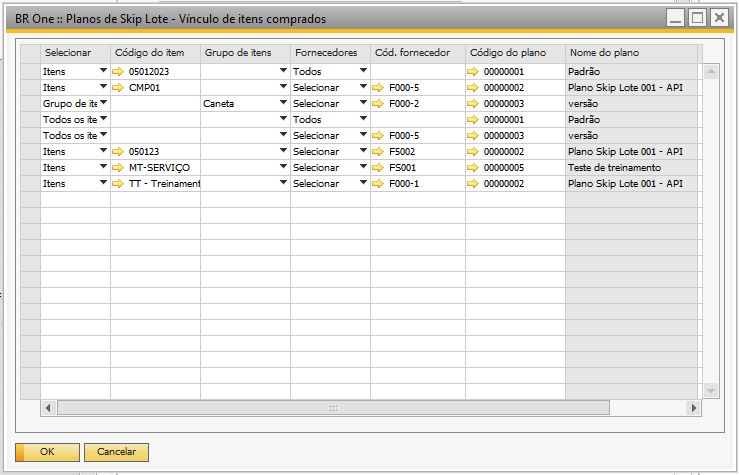
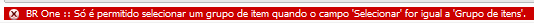

Vínculo de itens de compra
Para os itens comprados, o ‘Plano de Skip’* Lote deve ser configurado na tela **’Planos de Skip Lote – Vínculo de itens comprados’.
Para acessar a tela de ‘Planos de Skip Lote – Vínculo de itens comprados’ é necessário ir no menu:
Menu principal -> Qualidade -> Planos de Skip Lote – Vínculo de itens comprados
{kind=link}
Nesta tela temos as seguintes colunas:
Selecionar:
Neste campo é possível escolher entre duas opções, ‘Itens’ e ‘Grupo de itens’.
Se o valor selecionado for ‘Itens’, será indicado ao ad-don que o plano se skip lote será vinculado a um item específico.
Se o valor selecionado for ‘Grupo de itens’, será indicado ao ad-don que o plano se skip lote será vinculado a um grupo de itens, ou seja, será válido para todos os itens pertencentes ao grupo selecionado.
Se o valor selecionado for ‘Todos os itens’, serão considerados todos os cadastros de itens, e não será necessário preencher a coluna ‘Código do item’ e ‘Grupo de itens’
Código do item:
Campo indica o item de compra que terá o vínculo com o plano de skip lote, deve ser preenchido apenas se o no campo ‘Selecionar’, for escolhido a opção ‘Itens’.
Grupo do item:
Campo indica o grupo do item de compra que terá o vínculo com o plano de skip lote, deve ser preenchido apenas se o no campo ‘Selecionar’, for escolhido a opção ‘Grupo de itens’.
Fornecedores:
Neste campo é possível escolher entre duas opções, ‘Selecionar’ e ‘Todos’.
Se o valor selecionado for ‘Selecionar’, é indicado ao ad-don que um fornecedor específico deve ser considerado para o processo do skip lote e com isso o campo ‘Cód fornecedor’ deve ser preenchido.
Se o valor selecionado for ‘Todos’, é indicado ao ad-don que todos os fornecedores cadastrados deverão ser considerados para o processo do skip lote e com isso o campo ‘Cód fornecedor’ não deve ser preenchido.
Cód. Fornecedor:
Este campo indica o fornecedor que será considerado para o processo do skip lote, deve ser preenchido apenas se o campo ‘Fornecedores’ estiver preenchido como ‘Selecionar’.
Código do plano:
Este campo indica o plano de skip lote que ser considerado no processo, portanto, seu preenchimento é obrigatório.
Nome do plano:
Este campo indica o nome do plano de skip lote selecionado no campo ‘Código do plano’, seu preenchimento é automático.
Qtde. acumulada:
Este campo indica a configuração de quantidade acumulada para o item de compra selecionado.
O ad-don, possui algumas validações que autenticam o correto preenchimento dos campos citados acima.
Se o usuário tentar selecionar um item na coluna ‘Código do item’, e na coluna ‘Itens’ estiver selecionado ‘Todos’, a seguinte mensagem será exibida:
{kind=link}
BR One :: Só é permitido selecionar um item quando o campo ‘Itens’ for igual a ‘Selecionar’.
Se o usuário tentar selecionar um grupo de itens na coluna ‘Grupo de itens’, e na coluna ‘Itens’ estiver selecionado ‘Todos os itens’ ou ‘Itens’, a seguinte mensagem será exibida:
{kind=link}
BR One :: Só é permitido selecionar um grupo de item quando o campo ‘Selecionar’ for igual a ‘Grupo de itens’.
Na coluna ‘Fornecedores’, se o valor selecionado for ‘Selecionar’, deve-se preencher o código do fornecedor na coluna ‘Cód. fornecedor’. Se o valor selecionado for ‘Todos’, serão considerados todos os cadastros de fornecedores, e não será necessário preencher a coluna ‘Cód. fornecedor’.
Se o usuário tentar selecionar um fornecedor na coluna ‘Cód. fornecedor’, e na coluna ‘Fornecedores’ estiver selecionado ‘Todos’, a seguinte mensagem será exibida:
{kind=link}
BR One :: Só é permitido selecionar um fornecedor quando o campo ‘Fornecedores’ for igual a ‘Selecionar’.
Se na coluna ‘Código do plano’ estiver selecionado o plano ‘Por quantidade’, a coluna ‘Quantidade acumulada’ deve ser obrigatoriamente preenchida. Se o usuário selecionar o plano Por quantidade, e o valor da coluna Quantidade acumulada não for maior do que zero, a seguinte mensagem será exibida:
{kind=link}
BR One :: Quantidade acumulada deve ser maior do que zero (Linha X).
A ordem em que os vínculos são registrados nessa tela influencia a prioridade que o sistema determina o plano de Skip Lote do produto/fornecedor.